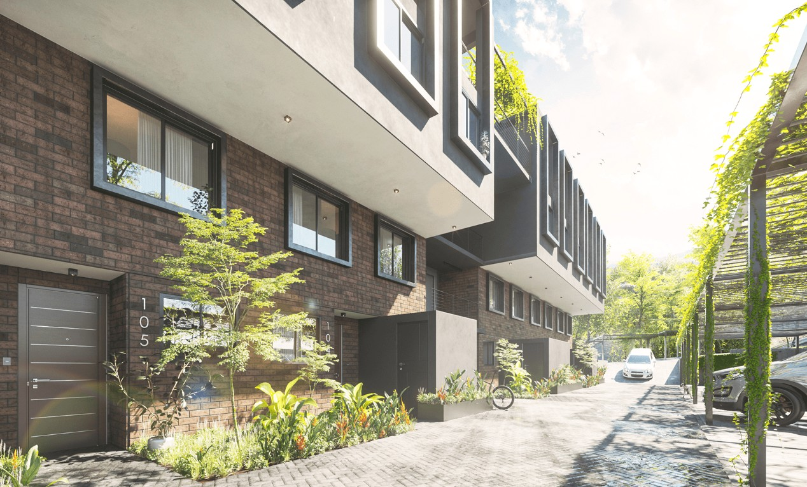
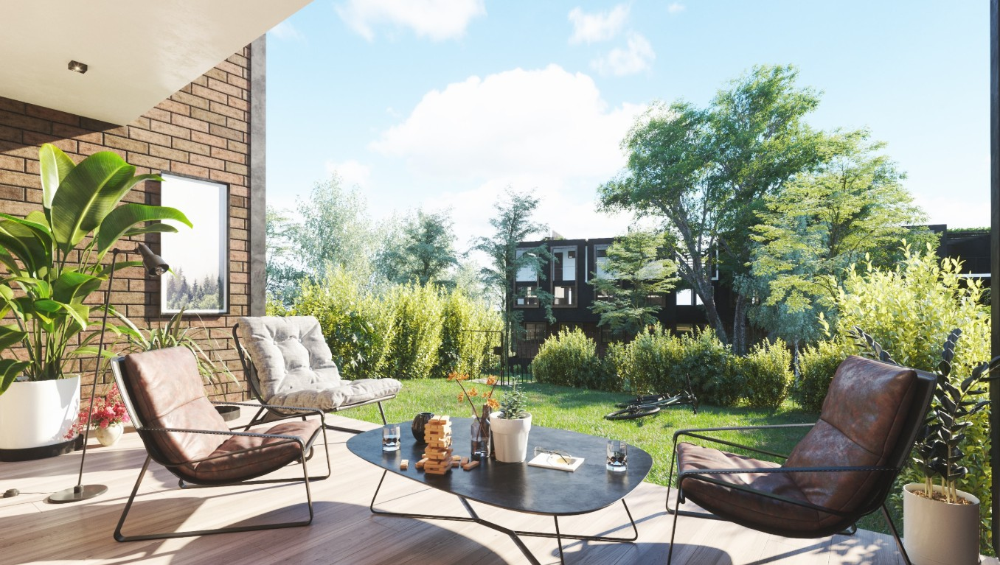
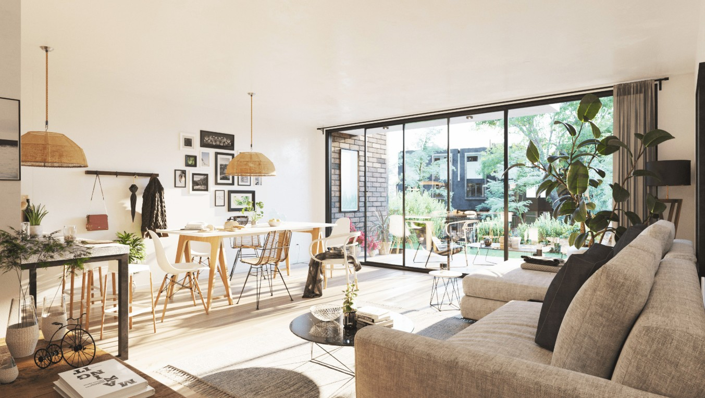
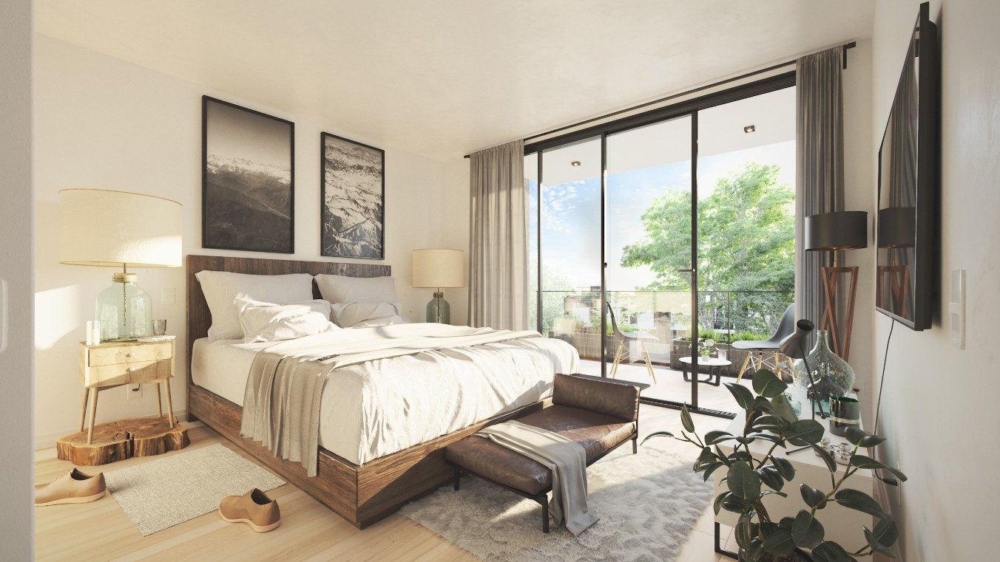
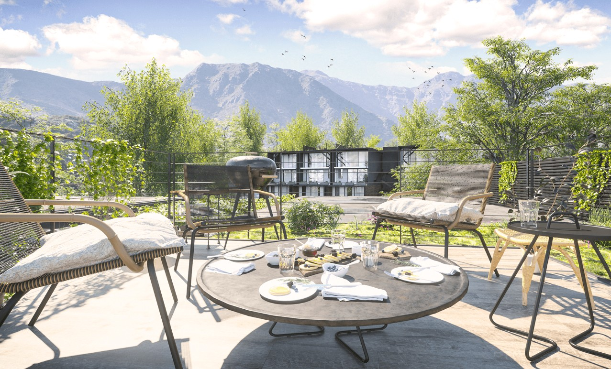

Peñalolén · Santiago
Condominio
Parque Casanova

Conjunto residencial compuesto por dos bloques de departamentos dúplex, donde las viviendas se relacionan con jardines, terrazas y espacios exteriores comunes.
- Ubicación
- Álvaro Casanova 661, Peñalolén
- Año
- 2018
- Tipología
- Dos bloques de departamentos dúplex
- Superficie
- 3.812 m²
- Unidades
- 28 departamentos
- Mandante
- IKNOW Inmobiliaria
- Arquitectura
- Franulic y Asociados




